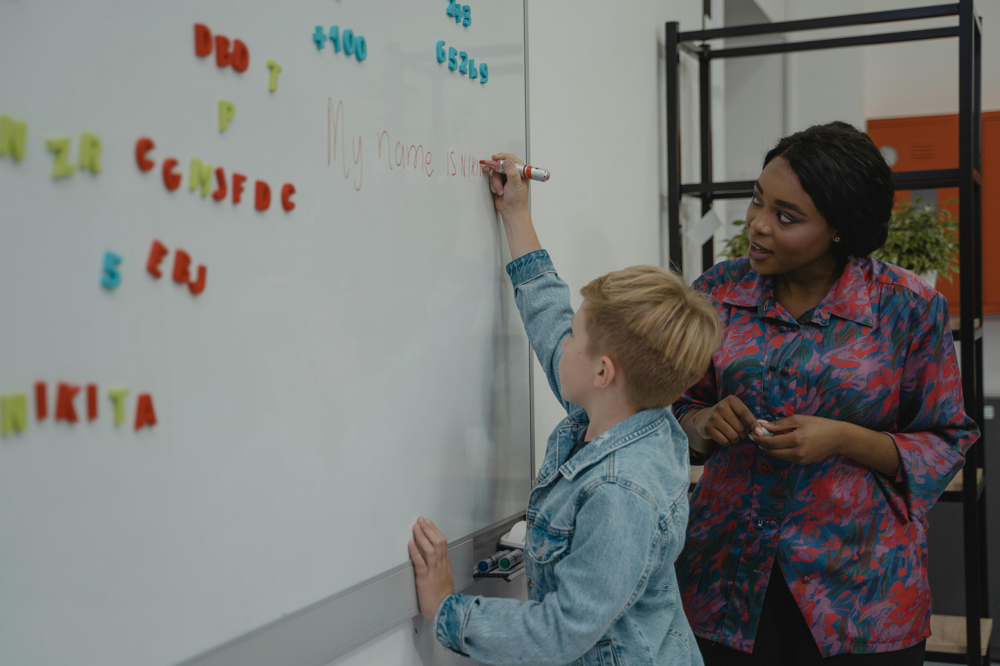
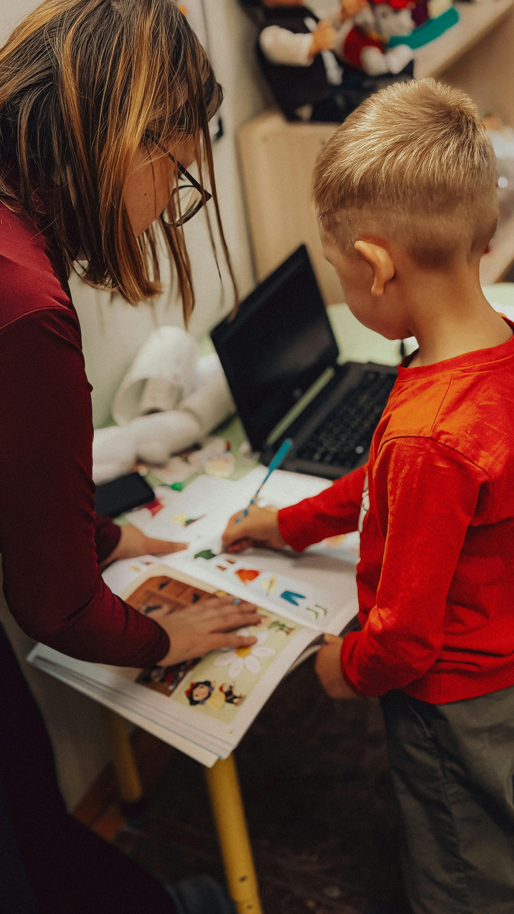
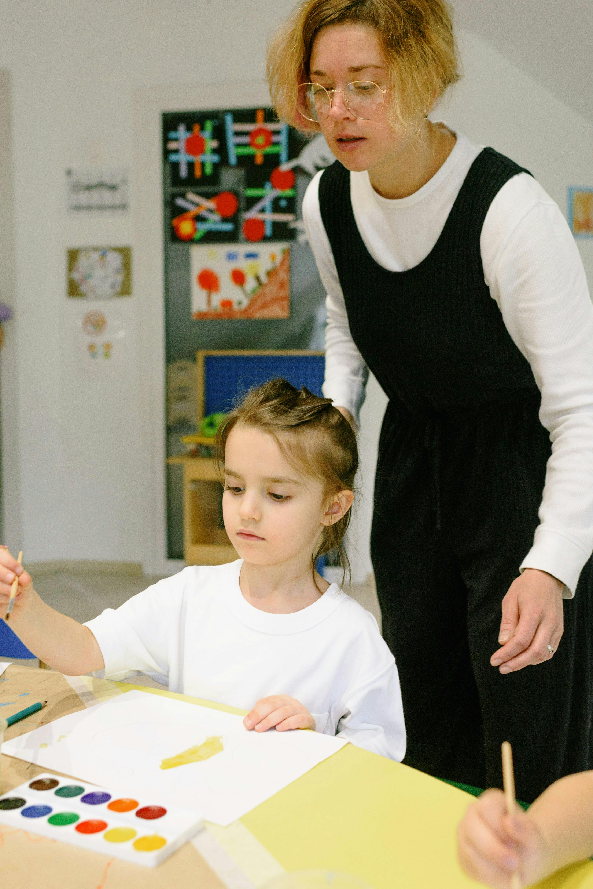

Transformando la integracion escolar a traves de la comunicacion.
Problematica
En el nivel inicial, la falta de coordinación entre el docente y el acompañante terapéutico genera dificultades en la planificación, la adaptación de actividades y la atención individual de los niños con necesidades específicas.
Nuestra visión
Compromiso con la Educación Inclusiva
Creemos que la comunicación es la herramienta más poderosa para derribar barreras. Nuestro objetivo es brindar un marco donde docentes y acompañantes puedan unir fuerzas, asegurando que cada niño reciba la atención y las adaptaciones que merece para alcanzar su máximo potencial.
Impacto
- Desorganizaciòn en el aula
- Actividades poco adaptadas a las necesidades de los niños
- Estrès tanto en el docente como en el acompañante
- Menor aprovechamiento del tiempo pedagojico
¿Porque mejorar la coordinación?
Beneficios claves para la comunidad educativa.
Gestion agil
Acceso anticipado a materiales, planificación colaborativa y reduccion de carga administrativa.
Adaptacion Real
Acompañantes reciben la curricula y actividades con anticipacion, permitiendo una adaptacion mas precisa a las necesidades de cada niño.
Menos estres
Al reducir la incertidumbre y mejorar la comunicacion, tanto docentes como acompañantes experimentan menos estres y una colaboracion mas armoniosa.
Mejor uso del tiempo
Con una mejor coordinacion, se optimiza el tiempo pedagojico, permitiendo que los niños aprovechen al maximo las actividades planificadas.
¿Que beneficios otorga al niño?
Sentido de Pertenencia
Al tener actividades adaptadas, el niño se siente parte del grupo y no un espectador, fortaleciendo su autoestima y su vínculo con sus compañeros.
Mayor Autonomía
La coordinación permite que el niño reciba los apoyos justos en el momento indicado, evitando la sobreprotección y fomentando que aprenda a valerse por sí mismo.
Reducción de la Frustración
Cuando el material está preparado de antemano, el niño enfrenta desafíos que puede resolver, lo que disminuye el estrés y las crisis dentro del aula.
Continuidad Pedagógica
El trabajo en equipo entre docente y acompañante asegura que los objetivos de aprendizaje no se interrumpan, permitiendo un progreso real a largo plazo.
Trabajo en el aula


